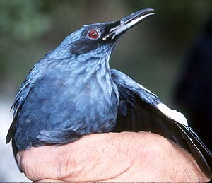
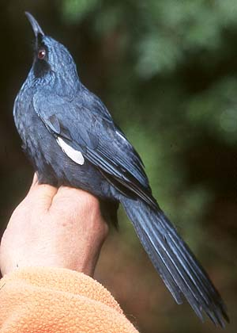

| These photographs accompany records that have been recently submitted to the committee. This record
was NOT ACCEPTED because of questionable natural occurrence.   Blue Mockingbird Melanotis caerulescens 31 Jan 2000, Long Beach, LA 1999-208 © 2000 Kimball L. Garrett Back to CBRC Rare Bird Photos |